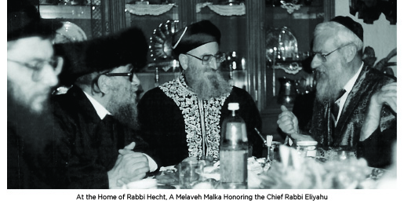
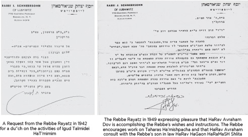
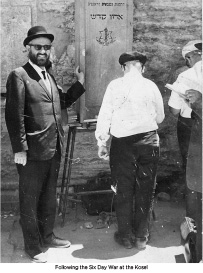
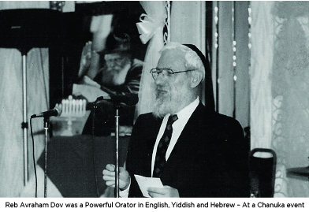

The Rebbe’s Ambassador to the Sephardic World
His accomplishments for Yiddishkeit are legendary. His hiskashrus to the Rebbe knew no bounds. His love of Torah and Mesiras Nefesh for the honor of Chassidus and the Jewish people are famous. * Presented for the first Yarzheit of HaRav HaChassid Reb Avraham Dov Hecht
THE ALTER REBBE’S HILULA

REB AVROHOM HECHT’S YAHRTZAIT
Two centuries later, the date of 24 Tevet is also remembered by the Hecht Family of Chabad Lubavitch renown, as being the Yahrtzait of HaRav HaChassid Avrohom Dov Hecht a”h who passed away a few hours after the conclusion of the holy Shabbos (Parshas Shmos 5773) coinciding – almost to the hour of day – with the historic 200th anniversary of the Alter Rebbe’s histalkus that was on Motzaei Shabbos Kodesh Parshas Shmos, in the year 5573.
CHASSIDIM “YANKEE DOODLES”
Reb Avrohom Dov was born on Nissan 7, 5682 (April 5, 1922). He was the third child of six siblings, all boys, born to his American born father Reb Yehoshua (Samuel) and mother Sara (Soochie) Hecht.
His grandfather Reb Tzvi Hersh Elimelech Hecht immigrated to America arriving at Ellis Island in the 1880’s. His arrival was accompanied by a lifelong shlichus of the Shiniver Rebbe zt”l (son of the Sanzer Rebbe zt”l), who blessed him with success in America and appointed him to be a Gabbai Tz’daka to gather funds in support of the Tzaddikim in Europe. A few years after his own arrival in America, Reb Tzvi Hersh also brought over his father Reb Fischel Hecht a”h.
SIX HECHT BROTHERS – THE SIX ORDERS OF THE MISHNA
Reb Tzvi Hersh Elimelech sent his 12-year-old son Yehoshua, shortly before his Bar Mitzvah, to Eretz Yisroel to study Torah within the old Yishuv. Yehoshua was a favorite at the Lelover Rebbe’s Shabbos and Yom Tov table throughout the almost six years he spent studying Torah in the old Yishuv.
Yehoshua Hecht returned to America at the age of eighteen. Soon thereafter he married Sadie, the daughter of Reb Shea’la Oister a Chassidisher pious Jew.
Yehoshua and Sara were blessed with six lively sons and Reb Yehoshua and Soochie did everything to educate their sons in the ways of Torah and honoring Torah scholars. The Hecht boys’ maternal grandfather Reb Shea’la who in his old age moved to Eretz Yisroel would call his six grandsons “meiner Shisha Sidrei Mishna” – my six orders of the Mishna!
THE EARLY YEARS: A HOME OF TORAH AND YIRAS SHAMAYIM
The Hecht home in Brownsville, a section right near Crown Heights, was the address for countless Jews – some of them representatives of Chassidic Rebbes and heads of Torah schools in Europe or then Eretz Yisroel, who stayed at the home of the Hechts for Shabbos or for weeks on end, making a profound impression on the young Hecht brothers.
THE REBBE’S “MADE IN AMERICA” CHASSIDIM

At the time, Reb Tzvi Hersh Meilech maintained and supported a women’s mikva as well as the only men’s mikva in the Brownsville area. One time, the secretary of the Rebbe made an inquiry asking if the Mikva in Brownsville would be available for a visit by the Rebbe on Erev Shabbos.
When Reb Hersh Meilech heard that the great Rebbe of Lubavitch was to visit, he announced that the Mikva was being closed for renovations. Within a few days the mikva was freshly painted, scoured clean, and outfitted with new carpet runners so as to upgrade the mivka’s appearance in preparation of its regal visitor.
Upon exiting the Mikva, the Rebbe gave a princely sum (some say it was a $20 bill and some say it was a $10 bill) as payment. Reb Hersh Meilech respectfully refused to take any remuneration and said to the Rebbe, “My job is to support the Rebbe and certainly not to take any money from the Rebbe.” He continued, “However, I would very much appreciate the Rebbe’s bracha!”
The Rebbe said “Ich gib dir mein bracha az deiner aineklach zolon zain meiner Chassidim.” (I give you my bracha that your grandchildren will be my Chassidim!)
It should be noted that at the time, America was in the midst of the “roaring twenties,” and receiving a blessing that one’s grandchildren, third generation Americans, would be Lubavitcher Chassidim was truly a remarkable blessing to receive!
REB AVROHOM DOV: A CHASSID WITH MANY FIRSTS
Like his namesake Avrohom Avinu, the first Jew, Reb Avrohom was one of the first ten Talmidim of Tomchei T’mimim Lubavitch in America that was established one day after the Rebbe Rayatz arrived in America in 1940. The yeshiva opened in the Oneg Shabbos Shul of East Flatbush with HaRav Mordechai Mentlick as Rosh Yeshiva until it moved to 770 when that building was purchased.
It had been little more than a year before, in 1939, at the age of 17, that young Avrohom Dov together with Reb Meir Greenberg a”h, Reb Berel Levy a”h, Reb Yitzchok Kolodny and others had arrived in Otwozk, Poland. These young men were all mentored by the well-known Chassid and mashpia Rabbi Yisroel Jacobson a”h who, as the Rav of the Babroisker shul in Brownsville, had prepared them by learning Tanya and Chassidus with them and farbrenging with them on a regular basis. Rabbi Jacobson then brought his mushpa’im to the Rebbe Rayatz in Europe to study Torah and Chassidus at the Lubavitcher Yeshiva.
THE REBBE ADDRESSES THE BOYS IN PARIS
When the boys together with Rabbi Jacobson arrived in Paris on their way to Poland, they merited to be greeted by the Rebbe, then known as the RaMaSh. Reb Avrohom describes in his diary the striking and impressive appearance of the Rebbe noting, “They say the Rebbe’s son-in-law RaMaSh is meyached yichudim (effecting divine unifications) with every step he takes.”
When I inquired of my father a”h if he remembered what the Rebbe spoke to them about, he answered the Rebbe spoke about, “What it means for a Chassid to greet his Rebbe.”
WHEN THE PREVIOUS REBBE SUMMONED ME
Reb Avrohom Dov was from the most talented students of the yeshiva. He merited numerous private audiences with the Rebbe Rayatz. He relates:
One day in 1941 or 1942, I was in the zal (Study Hall) studying when the Rebbe’s secretary told me that the Rebbe is summoning me and that I should go upstairs.
With great trepidation I entered the Rebbe’s Yechidus room and the Rebbe inquired of me, “Avrohom, do you know the difference between a (Roosisher) Chassid from Russia and an (Americaner) American Chassid?
The Rebbe went on to explain that an American Chassid has the nature of a shpendel, a Yiddish word for a dry splinter of wood. As soon as the shpendel is ignited (which is rather easy to do) it burns with a great flickering flame but it burns out rather quickly.
However, a Russian Chassid is like a burning piece of coal. It may take a bit of extra effort and time to ignite a piece of coal, but once ignited it keeps its heat and stays ignited for a prolonged time.
The Rebbe concluded, Avrohom you may go now.
OPENING ACHEI T’MIMIM DAY SCHOOLS IN THE NORTHEAST
Among the first shluchim sent to open Achei T’mimim day schools in the 1940’s was R’ Avrohom Hecht. His work was done in Buffalo, NY, Worcester, MA, Newark, NJ, New Haven, CT and Boston, MA. The longest stint was in Boston where R’ Avrohom, newly married to Leiba nee Grunhut, successfully opened a flourishing boys and then girls school.
FIRST LUBAVITCHER TO SERVE AMERICAN SEPHARDIC JEWRY

For over fifty years, beginning in the fall of 1945 he was appointed the Rabbi of the Young Magen David in Bensonhurst, Brooklyn. Before long he built up the attendance to more than 400 youth attending every Shabbos.
Under the watchful guidance of the Rebbe Rayatz, R’ Avrohom received the Rebbe’s encouragement, blessings and advice on what aspects to focus his energies on. The Rebbe indicated: youth, Torah education, Kashrus, Shabbos and Taharas HaMishpacha.
Following the end of WWII, many young Jewish men hailing from the Syrian Jewish community were returning from serving in the US Armed Forces. Sadly, many were thinking that their Jewish identity was no longer of paramount importance or had any relevance to their lives. Rabbi Hecht was instrumental in welcoming these young men back into civilian and Jewish community life.
With patience and brotherly concern, he re-integrated these many young veterans into the beauty and traditions of their Jewish and Sephardic heritage. These young men all married Jewish spouses and further set the foundation for building the Sephardic community in general and the Syrian Jewish community in particular, which numbers today in the many tens of thousands ken yirbu, with less than a 1% percent intermarriage rate despite arriving on these shores in the early 1900’s!
MY SEFARDISHER ROV
On more than one occasion, the Rebbe referred to R’ Avrohom Dov as my Sefardisher Rov.
With total dedication and loyalty R’ Avrohom consulted with the Rebbe on a myriad of issues affecting his community and matters pertaining to Klal Yisroel. He served as one of the trusted ambassadors of the Rebbe to the Sephardic Rabbinic world.
PRESIDENT OF A NATIONAL RABBINICAL ORGANIZATION
The Igud HaRabbanim, the Rabbinical Alliance of America, is well known. For the last thirty years, R’ Avrohom Dov also served as its President, championing the causes of Klal Yisroel. The Rabbinical Alliance, with its national and international exposure, was instrumental in addressing many of the issues affecting the American and Israeli Jewish community.
WHO IS A JEW, SHLEIMUS HAARETZ, THE SEVEN UNIVERSAL LAWS OF NOACH
R’ Avrohom hosted Israel’s Chief Rabbis at his home and shul. He was instrumental in bringing Chief Rabbi Mordechai Eliyahu z”l to the Rebbe and responsible for the subsequent amazingly close relationship and dedication that HaRav Eliyahu had for the Rebbe.
He was the Rebbe’s man behind the scenes, being very instrumental in having a number of Chabad Rabbanim being appointed as Chief Rabbis of major cities and towns in Israel.
CONNECTED TO THE REBBE WITH AMAZING LOYALTY, LOVE AND DEVOTION
Rabbi Hecht was a fearless champion for Mihu Yehudi, Shleimus HaAretz, and everything that the Rebbe indicated needed to be accomplished to bring Moshiach. Many were witness to the joyous smile Rabbi Hecht received from the Rebbe on numerous occasions.
On one occasion, during the distribution of dollars on Sunday, the Rebbe revealed to Rabbi Hecht that his requests and talks at the farbrengens about the importance of introducing the Sheva Mitzvos B’nei Noach into the United Nations, was with Rabbi Hecht in mind. “I meant to have you (Rabbi Hecht) accomplish this,” said the Rebbe to him.
THE REBBE IS MOSHIACH OF OUR GENERATION
In a fiery talk to the campers and staff of Gan Yisroel in Parksville, New York at one of the Chaf Av convocations honoring the memory of the Rebbe’s father, HaRav HaMekubal Reb Levi Yitzchok zt”l, Rabbi Hecht asked the following question of the campers:
How is it possible that the Gemara states that “in the place where the Baal T’shuva stands the Tzaddik cannot stand?” Is this fair? The Rebbe who brought back so many tens of thousands of Jewish people to T’shuva and Torah and Mitzvah observance is unable to stand where the Baal T’shuva stands? Is this logical or reasonable? How can this be?
Rabbi Hecht answered the question as follows: Of course the Rebbe stands on a higher plane, because the Rebbe is never “standing” in one place. The Rebbe, the Tzaddik of our generation, is constantly ascending higher and higher. That’s why the Gemara says the Tzaddik is unable to remain “standing” i.e. stationary on one spiritual level, for indeed the Rebbe leads from an exalted and lofty spiritual level. In that talk he emphatically stated that “all the Talmidei HaBaal Shem Tov said that their Rebbe is Moshiach,” and thus I do not see what the controversy is about at all. Of course the Rebbe is Moshiach.
YOUR MISSION IN LIFE IS TO PUBLICIZE THE TORAH OF THE BAAL SHEM TOV

My father related to me the following episode. As a young man he was invited to give a lecture entitled, “Is there a future for Chassidism in America?”
His opening remark was, “I humbly believe that the title of my talk needs to be reworded as follows: ‘Is there a future for American Jewry without Chassidism?’
A MEANINGFUL LIFE OF TORAH, CHASSIDUS AND ACCOMPLISHMENTS
R’ Avrohom Dov was the rabbi of a community numbering well over 3,500 families. His influence and guidance helped build the Sephardic community of metro New York to well over 70,000 souls.
His accomplishments for Yiddishkait are legendary. His hiskashrus to the Rebbe knew no bounds. His love of Torah and Mesiras Nefesh for the honor of Chassidus and the Jewish people are reflected in the date of his Yahrtzait – the same calendar day – -two hundred years – – almost to the hour of the Alter Rebbe’s histalkus.
Reb Avrohom Dov’s contribution to the establishment of Chassidus Chabad on these American shores together with his unforgettable brothers, R’ Shlomo Zalman in Chicago, R’ Moshe Yitzchok in New Haven, CT, R’ Yaacov Yehuda (J.J.) in NY, R’ Peretz, in NY and – to long life – R’ Sholom, NY put into actual practice the clarion call of the Rebbe Rayatz to American Jewry: “America is nisht anderesh” – America is not different!
YEHI ZICHRO BORUCH – WE WANT MOSHIACH NOW!
Beis Moshiach (staff). "The Rebbe’s Ambassador to the Sephardic World." Beis Moshiach, no. 910 (January 7, 2014).